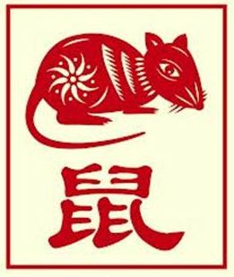

The Chinese Zodiac: Rat

- Fixed Season: Winter
- Fixed Direction: North
- Fixed Element: Water/Yang
- Associated Sun Sign: Sagittarius
Those born under the Rat sign often find that their thoughts and lifestyle hold steady over time, and while changes do occur from time to time they are the result of careful decisions and deep thought. With protection comes hindrance, however, and occasionally one's caution can cause them to miss a chance at something, whether it is a new job, a new relationship, or simply a new experience. Whatever the case, though, the Rat continues to hold strong in its den, interacting with the rest of the world on their own terms, and holding onto a sense of peace that perseveres all trials and tribulations.
Part of the Rat's defenses is a positive outlook on the events that comprise their life, from the celebration of growing up to the conflicting emotions of adulthood. While there may be times of deep sorrow, or unwelcomed change, there is also much happiness and light in one's life as well. Where the Rat excels, then, is in seeing past those initial phases and focusing on the possibilities of their future. This allows them to survive even the most troublesome of times and to thrive once again in the lifestyle they have chosen for themselves. Embracing the peace when it comes and embodying the spirit of their community.